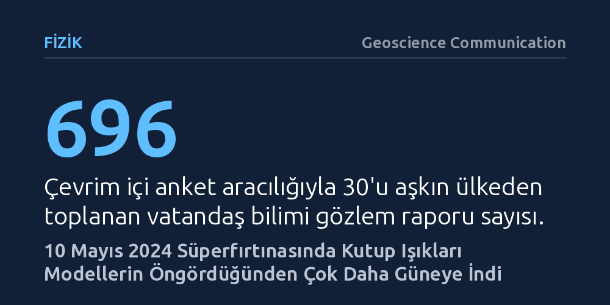

FIZIK · Geoscience Communication · 2026-10-16
Araştırmacılar, 10 Mayıs 2024'teki şiddetli jeomanyetik fırtınada kutup ışıklarının nerelere kadar yayıldığını dünya genelinden toplanan 882 yurttaş gözlemiyle inceledi. Işımaların modellerin öngördüğünden çok daha güneye inerek 30 derece enlemlere ulaştığı ve düşük enerjili elektron akısı nedeniyle kırmızı-pembe renklerde belirdiği saptandı.
Mevcut uzay havası modellerinin aşırı Güneş fırtınalarında yetersiz kaldığını ve yurttaşların akıllı telefonlarıyla bilimsel ölçüm ağlarındaki devasa coğrafi boşlukları kapatabildiğini gösteriyor.

10 Mayıs 2024 gecesi Dünya, son yirmi yılı aşkın sürenin en şiddetli jeomanyetik fırtınalarından biriyle sarsıldı. Bilim dünyasının "Gannon Fırtınası" olarak adlandırdığı bu devasa doğa olayında, Güneş'ten fırlatılan yüklü parçacıklar Dünya'nın manyetik kalkanına çarparak küresel ölçekte bir çalkantı yarattı. Normal koşullarda yalnızca kutup dairelerine yakın yüksek enlemlerde gözlenebilen kutup ışıkları, bu fırtına sırasında daha önce nadiren görüldüğü coğrafyalarda gökyüzünü aydınlattı.
Ortadaki temel bilimsel soru, bu olağanüstü fırtınanın kutup ışıklarını Dünya üzerinde tam olarak nerelere kadar sürüklediği ve bu ışımaların arkasında yatan parçacık fiziğinin ne olduğuydu. Bilim insanları kutup ışıklarını takip etmek için çeşitli uydular ve yer tabanlı bilimsel gözlemevleri kullanır; ancak bu aygıtlar çoğunlukla kutup bölgelerinde yoğunlaşmıştır. Kutup ışıklarının nadiren indiği orta enlemlerde ise neredeyse hiç bilimsel ölçüm istasyonu bulunmaz. Bu durum, fırtınanın en dramatik etkilerinin yaşandığı bölgelerde bilim dünyasını gözlemsel veriden yoksun bırakma tehlikesi yaratıyordu.
Resmi gözlemevlerinin bıraktığı bu boşluğu kapatmak için araştırmacılar, akıllı telefonları ve fotoğraf makineleriyle gökyüzünü izleyen sıradan yurttaşların gücüne başvurdu. Sosyal medyanın ve uyarı platformlarının etkisiyle fırtınadan haberdar olan milyonlarca insan, dünyanın dört bir yanından gökyüzünü fotoğrafladı. Araştırma ekibi, kutup ışığı fotoğrafçılarının dahil olduğu ağlar üzerinden çevrim içi bir anket dağıtarak gözlem saatini, coğrafi konumu, görülen renkleri, ışığın biçimini ve teknolojik sistemlerde yaşanan aksaklıkları topladı.
Araştırmacılar 30'u aşkın ülkeden tam 696 ayrıntılı yurttaş bilimi raporu elde etti. Bu birincil veri tabanı, vatandaş bilimcilerin Skywarden kataloğuna kaydettiği 186 bağımsız gözlem verisiyle birleştirilerek toplam 882 vakalık zengin bir arşive dönüştürüldü. Böylece pahalı ve sabit bilimsel aygıtların bulunmadığı orta enlemlerde, halkın kolektif çabası sayesinde eşi görülmemiş yoğunlukta bir gözlemsel veri seti oluşturulmuş oldu.
Toplanan veriler incelendiğinde en çarpıcı bulgu gün yüzüne çıktı: Kutup ışıkları jeomanyetik olarak 30° ile 60° enlemleri arasındaki geniş bir kuşakta yaygın şekilde görülmüş, hatta birkaç raporda daha da düşük enlemlerden izlendiği bildirilmişti. Bu sonuç, kutup ışıklarının olağan sınırlarını hesaplayan auroral oval modellerinin öngördüğünden belirgin biçimde daha güneyde, yani ekvatora çok daha yakın konumlarda ortaya çıktığını gösterdi. Bilgisayar modellerinin fırtına anındaki sınır tahminleri ile gökyüzündeki gerçek manzara arasında ciddi bir coğrafi uyumsuzluk mevcuttu.
Raporda dikkat çeken bir diğer temel bulgu ise gökyüzünün büründüğü renkti. Gözlemcilerin büyük bölümü, ışımaların çıplak gözle dahi seçilebilen yoğun kırmızı ve pembe tonlarda parıldadığını aktardı. Atmosfer fiziği açısından bu renkler rastlantısal değildir; üst atmosferdeki gaz moleküllerinin düşük enerjili elektronlarla çarpışması sonucunda yayılır. Gözlemler, fırtına sırasında üst atmosfere akan parçacık yağmurunun 1 kiloelektronvolttan (< 1 keV) daha düşük enerjili yoğun bir elektron akısı barındırdığını ortaya koydu.
Elde edilen bulgular, aşırı uzay havası olaylarında kullanılan mevcut öngörü modellerinin sınırlarını çok net biçimde açığa çıkarıyor. Güneş etkinliğinin zirveye ulaştığı dönemlerde Dünya'ya yönelen dev fırtınalar, manyetik kalkanımızı mevcut simülasyonların beklediğinden çok daha sert şekilde sıkıştırabiliyor ve parçacıkları çok daha geniş bir coğrafyaya saçabiliyor. Bu durum yalnızca görsel bir doğa olayı anlamına gelmiyor; elektrik şebekeleri, GPS uyduları ve havacılık iletişimi gibi kritik altyapıların fırtınalardan hangi coğrafyalarda etkilenebileceğini doğru kestirmek için modellerin güncellenmesi gerektiğini kanıtlıyor.
Öte yandan çalışma, vatandaş biliminin modern jeofizikteki tamamlayıcı rolünü açıkça gösteriyor. Milyonlarca insanın elindeki basit kameralar, milyarlarca dolarlık bilimsel uyduların veya sabit rasathanelerin göremediği coğrafi kör noktaları başarıyla aydınlatabildi. Bilim insanları ile meraklı gözlemciler arasındaki bu doğrudan veri akışı, gelecekteki aşırı uzay fırtınalarını anlamak ve olası teknolojik risklere karşı hazırlıklı olmak için güçlü bir iş birliği zemini sunuyor.